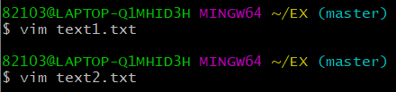
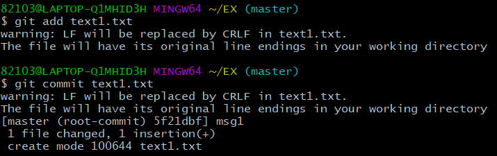
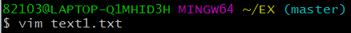
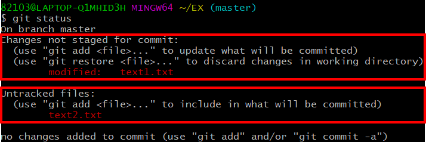
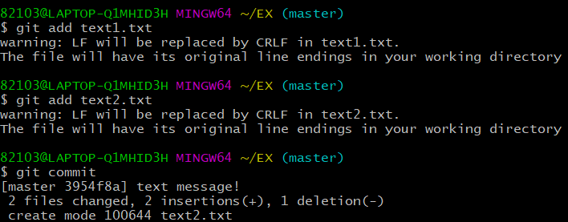
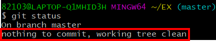
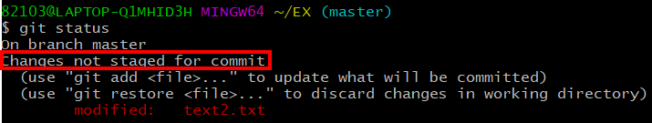
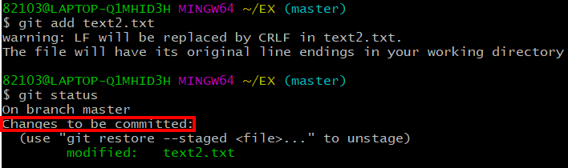
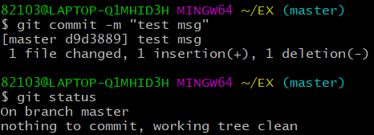
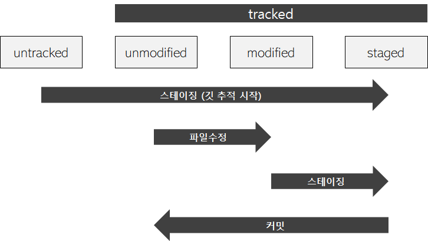

* 다음 포스팅은 깃(Git)의 사용방법에 대하여 정리한 것으로, 개인적인 공부 기록용으로 작성한 글 이기에 잘못된 내용을 포함하고 있을 수 있습니다.
* Window 운영체제를 기준으로 작성했습니다.
[목차]
#1 tracked & untracked
#2 tracked 파일의 상태 : unmodified modified staged
#1 tracked & untracked
작업트리에 존재하는 파일은 크게 tracked 상태와 untracked 상태로 분류된다. 한 번이라도 버전 관리를 수행한 파일은 깃이 파일의 상태를 추적하는데, 깃이 추적하고 있는 파일을 tracked 상태로 정의한다. 반대로 버전 관리를 수행하지 않은 파일은 깃이 상태를 추적하고 있지 않다고 하여 untracked 상태라고 한다.
이해를 돕기 위해 Git 환경에서 실습을 진행해 보도록 하겠다.
EX 디렉터리 안에 Vim 편집기를 이용해 text1.txt , text2.txt 텍스트 파일을 생성하고, 각각 1 , 2 를 입력 하였다.

다음으로 text1.txt 파일을 git add 명령을 이용해 스테이징 영역에 올리고, git commit 명령을 이용해 저장소에 추가하였다. (text1.txt 파일만 버전관리를 수행한 이유는, text2.txt 파일과 비교하기 위해서이다.)

다음으로 text1.txt 파일의 내용을 "1" 에서 "one"으로 변경 하였다.

이제 git status 명령을 통해 깃의 상태를 확인해 보자.
커밋을 완료한 text1.txt 파일은 Changes not staged for commit: 라고 되어있고, 파일 명 앞에 modified: 라는 문구가 추가되어, text1.txt 파일이 수정 되었음을 알 수 있다. 이처럼 깃은 한 번이라도 커밋한 파일을 계속해서 추적하는데, 이를 tracked 파일 이라고 부른다.
반면 text2.txt 파일은 Untracked files: 라고 되어 있다. text2.txt 파일은 커밋을 한 적이 없기에 깃이 추적하지 않는 것이다. 이런 파일들을 Untracked 파일 이라고 부른다.

#2 tracked 파일의 상태 : unmodified modified staged
git status 명령을 통해 나오는 문구를 잘 분석해 보면, tracked 파일의 상태를 분석할 수 있는데 이를 통해 파일들이 어떤 단계 (작업트리, 스테이지영역, 저장소) 에 위치하는 지 예측할 수 있다. tracked 파일의 상태는 unmodified modified staged 3가지로 구분된다.
우선, text1.txt text2.txt 파일을 모두 커밋해서 버전으로 제작했다.
$ git add text1.txt
$ git add text2.txt
$ git commit
파일의 상태를 확인해 보면, "nothing to commit, working tree clean" 이라는 문구가 출력된다.
이는 현재 작업트리에 존재하는 모든 파일이 unmodified (수정되지 않음) 상태라는 의미이다.

vim 편집기로 text2.txt 파일의 내용을 "2"에서 "two"로 수정하고, 상태를 확인해 보았다.
"Changes not staged for commit" 이라는 문구가 출력되는데, 이는 스테이지 영역에 올라가지 않고 수정만 된 "modified(수정됨) 상태"라는 의미이다.
$ vim text2.txt // "2" -> "two"
$ git status
다음으로 text2.txt 파일을 git add 명령어를 이용해 스테이징한 뒤, 상태를 확인해 보았다.
"Changes to be commited" 라는 문구가 출력된다. 이는 커밋 직전 단계 "staged 상태" 라는 의미이다.

text2.txt 파일을 커밋한 후, 상태를 확인해 보니 초기 상태 nothing to commit, working tree clean 즉, unmodified (수정되지 않음) 상태로 돌아갔다.

전체적인 tracked 파일의 상태도를 그려보면 다음과 같다.
